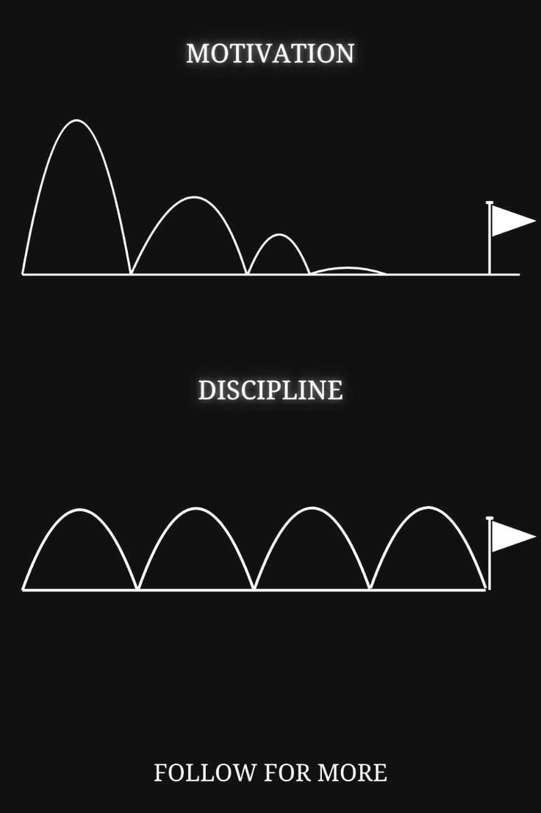

1. Raiz Interior
- Autoconhecimento: saiba quem você é, seus valores e sua visão de vida.
- Espiritualidade: fortaleça sua fé e pratique gratidão.
- Autoconfiança: acredite que você merece ser respeitada e lembrada.
2. Disciplina e Elegância
- Cuidar do corpo e da mente: alimentação saudável, sono de qualidade e rotina de autocuidado.
- Postura e comunicação: fale com firmeza, mas com gentileza; ande com graça e confiança.
- Gestão do tempo: organize-se com cronogramas, metas e prioridades.
3. Mulher que Inspira
- Educação contínua: estude, leia, faça cursos — torne-se referência.
- Compartilhe conhecimento: ajude outras mulheres, ensine, oriente.
- Empatia e liderança: ouça, apoie e seja exemplo de força com doçura.
4. Mulher Troféu
- Excelência pessoal: destaque-se pelo que você é, não apenas pelo que tem.
- Estilo de vida admirável: cuide da aparência com sutileza, mas valorize o caráter.
- Exclusividade: seja seletiva com amizades, relacionamentos e oportunidades — seu valor aumenta quando você se valoriza.
4.1. Autocuidado e aparência
- Cuide da sua saúde (alimentação, sono, exercícios).
- Vista-se de forma elegante e que combine com sua personalidade.
- Mantenha higiene e pequenos detalhes (cabelos, unhas, pele).
4.2. Confiança e postura
- Tenha uma postura firme, fale com clareza e segurança.
- Seja educada e saiba se comportar em diferentes ambientes.
- Trabalhe sua autoestima — uma mulher confiante chama atenção sem esforço.
4.3. Inteligência e cultura
- Estude, leia, aprenda coisas novas.
- Esteja sempre informada (notícias, tendências, arte, cultura).
- Tenha opiniões próprias e saiba conversar sobre diferentes assuntos.
4.4. Independência
- Tenha objetivos e lute por eles.
- Não dependa apenas de alguém para se sentir realizada.
- Ser admirada por aquilo que você construiu é um verdadeiro “troféu”.
4.5. Carisma e elegância
- Trate bem as pessoas, com respeito e empatia.
- Saiba ser gentil sem se deixar explorar.
- Tenha elegância nas palavras, no comportamento e até nas redes sociais.
4.6. Ser uma Mulher Troféu que vive em comunhão com Deus
Ser uma mulher troféu vai muito além de aparência ou status. É ser aquela que reflete
excelência, força e disciplina, mas que, sobretudo, reconhece que não existe vitória
verdadeira sem Deus no centro da sua vida.
Uma mulher troféu diante de Deus é:
- A que não se prende ao orgulho, mas à fé.
- A que confia mais na direção divina do que na sua própria vontade.
- A que entende que disciplina sem Deus é vaidade, mas disciplina em Deus é legado.
- A que sabe que o verdadeiro troféu é viver de forma a inspirar e glorificar o Criador.
“Entrega o teu caminho ao Senhor; confia nele, e Ele tudo fará. Salmos 37:5”
5. Construindo o Legado
- Pegadas positivas: deixe marcas em quem cruza seu caminho (um conselho, uma ajuda, uma inspiração).
- Projetos de impacto: envolva-se em algo maior que você (comunidade, carreira, fé, arte).

Motivação
A motivação, apesar de necessária, pode se tornar frágil quando usada como único pilar:
- Dependência externa: muitas vezes, a motivação vem de elogios ou conquistas, e quando eles somem, o ânimo desaparece.
- Superficialidade: a motivação pode ser momentânea e não sustenta uma transformação profunda.
- Procrastinação disfarçada: a espera por “estar motivada” pode atrasar decisões e impedir a constância.
Disciplina
A disciplina é o alicerce silencioso que sustenta a verdadeira grandeza de uma mulher troféu:
- Constância no cuidado: mantém hábitos saudáveis mesmo sem vontade.
- Respeito conquistado: demonstra firmeza de caráter, inspirando confiança.
- Equilíbrio emocional: disciplina ensina a agir pelo que é certo, não apenas pelo que se sente.
- Legado sólido: cria marcas de excelência, amor e integridade que permanecem além do tempo.
6. Símbolo Final
- Ser uma mulher troféu não é ser objeto, mas ser referência;
- Ser uma mulher que inspira não é ser perfeita, mas ser autêntica;
- Construir um legado não é ser eterna, mas garantir que seu impacto dure além de você.